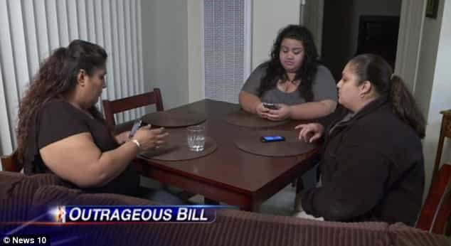

< < < Back
The Power Of Shame – Return Of Kings
When I was in elementary school, there was this fat girl we used to call “Hamburger.” She got that name because she had a habit of hanging out with this skinny girl (“Hot Dog”) and the contrast between their physiques was funny to our 11-year-old eyes. Hamburger would try her best to respond to our taunts, but my buddies and I had silver tongues, and would come back with an even funnier retort to whatever she could muster. Crowds would gather. She eventually recognized it was best to let things be.
It seems mean in retrospect, but everyone got it from someone at one point or another. Among the boys, we had a practice where you’d get “jumped” for saying something particularly idiotic. As soon as the silent consensus that what you’d said was retarded had set in, someone would yell, “jump ‘em,” and everyone would get in a few not-super-hard-but-also-not-light smacks in. I got my fair share of those.
Hamburger seemed to follow me from year-to-year and managed to stay looking the same until about the ninth grade, when she suddenly dropped a solid 40 or 50 clicks over the summer. It took a second to recognize her the first week of school, but it wasn’t long before I realize that there had been a reasonably cute chick under all those loaves of fat. Before long, she had also dropped Hot Dog from her lineup and was kicking it with a higher-end crowd. Things were looking up in Hamburger’s life.
Back then, they didn’t have a fancy label for what we’d done. Nowadays, they call it Fat Shame—with a capital F and S–and it can get you suspended from school, put on television, medicated to oblivion, or even arrested. Worse still, someone might make a Facebook group to reassure the subject of your observations that they aren’t really fat, or that it’s somehow okay.
There is now a well-entrenched Fat Apologist movement in the West, one that makes it wrong to even point out to people the plain truth. Unlike other forms of discrimination, fatness (especially among young people) is almost entirely under the control of the person in 95 percent of the cases—despite what many fatties and their apologists would have you believe. Celebrities like Adele fearlessly and crassly parade their fatness in your face. After all, what are you going to do about it?
Just this week, a well-publicized story made the rounds where three morbidly obese tanks complained to the management at the unhealthy diner where they were strapping on the feed bag that night. Apparently, their waiter had typed in the words “Fat Girls” in a field on their receipt intended to help him identify the clients. The giggling manager almost succeeded in buying their silence off with food (an astute move on his part), but he made the mistake of low-balling the offer.

I’m convinced our steady social pressure back in elementary school played a role in Hamburger’s improvement. In fact, our collective checks and corrections improved all of us. In an unwritten, unspoken code, our little community of school kids corrected one another’s behavior. Whether it was an unacceptable level of fitness, making idiotic jokes, or tattling, you knew you were accountable. Your reputation mattered, and the last thing you wanted to do is embarrass yourself or others. Things have sure changed in a short while.
Don’t get me wrong: shame culture is alive and well in America. Just certain types of shame have been deemed unacceptable, while others remain totally okay. Imagine if that table had been populated with fat dudes, and the receipt had said “Fat Guys.”
What would have happened then?
Read More: The Anti-Male Commercial


{kind=link}